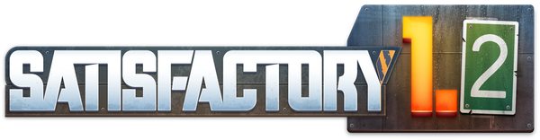

WELCOME TO THE OFFICIAL
SATISFACTORY WIKI
the Satisfactory guide and information source written and maintained by the community.
We are currently maintaining 9,467 pages (865 articles).
Please feel free to contribute by creating new articles or expanding existing ones.
Also check out the wiki in other languages:
Deutsch ·
Français ·
Русский
other translation projects
ABOUT SATISFACTORY
Satisfactory is a game from Coffee Stain Studios, the creators of Goat Simulator and the Sanctum series. Satisfactory is a game of factory management and planet exploitation. As a pioneer working for FICSIT Inc., you are dropped onto an alien planet with a handful of tools and must harvest the planet's natural resources to construct increasingly complex factories for automating all your resource needs.
After you are set up, it will be time to build the Space Elevator and begin Project Assembly. The main focus of the game lies in constructing buildings and linking them together with Conveyor Belts, while generating enough power to keep the factory running.
FEATURES
• A variety of item and fluid logistics including Conveyor Belts, Lifts, Pipes and more.
• Buildings for automated production of items, enhanced with Power Slugs and Somersloops.
• A vast alien world to explore, featuring beautiful vistas and curious creatures.
• Vehicles, including trucks and trains, for moving resources over great distances.
• A story to uncover and Arachnophobia Mode for pioneers who dislike spiders.
• No base defense.
FEATURED ARTICLES


UPDATES

(released 116 days ago)
(released 46 days ago)
(released 46 days ago)